SHER-KHAN
MAGICAR III
Система тревожной сигнализации транспортного средства (СТСТС)
РУКОВОДСТВО ПО УСТАНОВКЕ
Система тревожной сигнализации транспортного средства (СТСТС) (далее система) соответствует обязательным требованиям в системе сертификации ГОСТ Р, предъявляемых к приборам охраны для автомобиля:
ГОСТ Р 41.97—99 (Единообразные предписания, касающиеся официального утверждения систем тревожной сигнализации транспортных средств (СТСТС) и механических транспортных средств в отношении их систем тревожной сигнализации (СТС))
ГОСТ Р 50009—2000 (Совместимость технических средств электромагнитная. Технические средства охранной сигнализации. Требования и методы испытаний)
Постоянные исследования и разработки нашей компании воплощают самые передовые идеи и служат для удовлетворения всех потребностей пользователей наших систем.
Система SCHER-KHAN MAGICAR 3 является сложным электронным оснащением автомобиля. От его функционирования и правильной установки зависят безопасность Вашей жизни и обстановка на дорогах, качество работы близко расположенной радиоэлектронной аппаратуры и средств связи. Доверяйте установку системы только специализированным сервисным станциям.
В период эксплуатации периодически проверяйте правильность функционирования системы.
НАЗНАЧЕНИЕ SCHER-KHAN MAGICAR 3
SCHER-KHAN MAGICAR 3 является автомобильной сигнализацией с возможностью управления по радиоканалу посредством брелока-коммуникатора с жидкокристаллическим дисплеем. Система осуществляет обмен информацией между брелоком-коммуникатором и процессорным блоком на расстояние до 1500 м. Автосигнализация предназначена для работы на автомобилях с напряжением бортовой сети 12В и заземлённым отрицательным выводом батареи. Защита процессорного блока, датчика удара, датчика вызова, антенного блока выполнена по стандарту IP-40 и предусматривает установку в салоне автомобиля. Сирена выполнена по стандарту IP-65 и может быть установлена в моторном отсеке, вдали от выпускного коллектора и высоковольтных систем.
СПИСОК ФУНКЦИЙ
Функции брелока-коммуникатора
Функции процессорного блока
ТЕХНИЧЕСКИЕ ПАРАМЕТРЫ
Виды тревожного сигнала:
|
Виды тревожного сигнала: |
Длительность |
Частота срабатывания |
|
Звуковой на сирену (ток Imax = 2А) |
30 сек. |
Непрерывно |
|
Оптический, два канала с использованием аварийной сигнализации (ток по каналу Imax = 2×7.5 А) |
30 сек. |
Прерывисто, с частотой 1 Гц |
|
Посредством передачи сигналов по радиоканалу на расстояние до |
100 мсек. |
Прерывисто, с частотой 0.35 Гц |
Влияние на основное и дополнительное электрооборудование автомобиля
|
Система управляет подачей питания на: |
Максимальный ток по каналу |
|
Цепь блокировки 1 (управление внешним НЗ или НР реле) |
Imax = 0.25 А |
|
Цепь аварийной сигнализации левого борта |
Imax = 7.5 А |
|
Цепь аварийной сигнализации правого борта |
Imax = 7.5 А |
|
Цепь выхода на сирену |
Imax = 2 А |
|
Выходы управления центральным замком (разъём CN4 — четыре выходных цепи) |
Imax = 0.25 А |
|
Канал управления дополнительным устройством 1 |
Imax = 0.25 А |
|
Канал управления дополнительным устройством 2 |
Imax = 0.25 А |
|
Канал управления питанием датчиков |
Imax = 0.1 А |
Способы управления
Защита электрических цепей
Сферы защиты
|
Защищаемые зоны |
Методы защиты |
|
Контактные датчики (открытие |
Тревожный сигнал с ограничением |
|
Датчик удара (возможно |
Тревожный сигнал с ограничением |
|
Радиоканал управления |
Использование защищенного |
Прочие параметры
|
Процессорный блок |
Значение | |
|
Мин. |
Макс. | |
|
Напряжение питания |
9 В |
18 В |
|
Ток потребления процессорного блока в дежурном режиме* |
20 мА |
30 мА |
|
Диапазон рабочих температур |
-40 0С |
+85 0С |
|
Вес |
|
270мг |
|
Габариты |
155×116×39 мм | |
Элементы питания
|
Напряжение и тип элемента |
Срок службы одного комплекта элементов питания |
|
Процессорный блок 12В (автомобильный аккумулятор) |
Ограничено сроком службы АКБ автомобиля |
|
Брелок-коммуникатор 1.5В |
Около 6 месяцев* |
|
Дополнительный брелок 6В |
Около 3 месяцев* |
Примечание: В таблице приведено среднее значение. Срок службы элемента питания брелока зависит от интенсивности пользования брелоком, качества элемента питания, режимов работы брелока.
ВНИМАНИЕ! Применяйте только качественные элементы питания. Применение элемента питания низкого качества может привести не только к сокращению срока службы брелока, но и к его повреждению.
МЕРЫ ПРЕДОСТОРОЖНОСТИ ПРИ МОНТАЖЕ СИСТЕМЫ НА АВТОМОБИЛЬ
ВНИМАНИЕ! При несоблюдении мер предосторожности производитель не несёт ответственности за возможные последствия (повреждение автомобиля, нарушение работы штатного электрооборудования и т.п.)
УСТАНОВКА ОСНОВНЫХ КОМПОНЕНТОВ
Установка процессорного блока
Выберите место для установки процессорного блока в салоне (например, за или под приборной панелью) и закрепите его при помощи пластиковых стяжек или двусторонней липкой основы. После установки и подключения процессорного блока его необходимо обучить коду брелока.
ВНИМАНИЕ! Так как корпус блока не герметичен, не устанавливайте процессорный блок в моторном отсеке. Избегайте установки блока непосредственно на электронные компоненты автомобиля. Эти компоненты могут быть источниками радиопомех.
Установка антенного блока
Антенный блок может быть установлен в верхнем углу лобового стекла. Расстояние от антенны до ближайшей металлической поверхности должно быть не менее 50 мм. Перед установкой антенного блока следует обезжирить поверхность стекла в месте монтажа спиртовой салфеткой. Температура стекла при монтаже должна быть не менее +100С. Рекомендуется близкая к вертикальной ориентация антенного блока, при этом обеспечивается максимальная дальность связи во всех направлениях вокруг автомобиля. При прокладке провода от антенного блока к процессорному блоку следите за тем, чтобы не передавить провод панелями или фиксаторами обивки.
Допустима скрытая установка антенного блока. При скрытой установке
возможна некоторая потеря в дальности связи.
Возможные места установки:
Установка датчика вызова из автомобиля
Датчик вызова из автомобиля может быть установлен в нижнем левом или правом углу лобового стекла автомобиля. Перед установкой датчика следует обезжирить поверхность стекла в месте монтажа спиртовой салфеткой. Температура стекла при монтаже должна быть не менее +10°С. При выборе места установки следует избегать соприкосновения корпуса датчика с пластиковыми панелями или кузовом, что уменьшит вероятность ложных срабатываний. При прокладке провода от датчика вызова к процессорному блоку сигнализации следите за тем, чтобы не передавить провод панелями или фиксаторами обивки.
Установка сирены
Для установки сирены выберите место в моторном отсеке, которое хорошо защищено от доступа из-под днища автомобиля. Не размещайте сирену рядом с сильно нагревающимися узлами или подвижными компонентами. Для предотвращения скапливания влаги или грязи раструб сирены должен быть направлен вниз. Предупредите пользователя системы, что при мойке автомобиля необходимо защищать сирену от прямого попадания струй воды высокого давления.
Установка датчиков капота и багажника
Для охраны капота и багажника необходимо установить два датчика (концевых выключателя).
Эти датчики должны быть установлены на металлическую поверхность автомобиля, имеющую хороший контакт с кузовом. Важно выбрать такое место, где исключается возможность проникновения и (или) скопления воды. Выбирайте места, которые при закрытых капоте и багажнике защищены резиновыми уплотнениями. Не устанавливайте датчики на водостоках. Датчики могут быть установлены с помощью скобы или в монтажном отверстии соответствующего размера. Помните, что при правильной установке подвижный шток датчика должен иметь свободный ход не менее 5 мм при закрытии капота или багажника. Датчик в багажном отделении не должен мешать погрузке и выгрузке багажа, а датчик под капотом — техническому обслуживанию автомобиля.
Установка датчика удара
Выберите место на прочной поверхности в салоне и установите датчик удара при помощи двух винтов (пластиковых стяжек или двусторонней липкой основы). Убедитесь в наличии свободного доступа к датчику для его регулировки. Увеличение чувствительности датчика происходит поворотом регулятора соответствующей зоны по часовой стрелке, уменьшение чувствительности производится поворотом регулятора против часовой стрелки. Покажите пользователю место установки датчика удара и объясните способ регулировки его чувствительности. При прокладке провода от датчика удара к процессорному блоку сигнализации следите за тем, чтобы не передавить провод панелями или фиксаторами обивки.
НАЗНАЧЕНИЕ ПРОВОДОВ
6-КОНТАКТНЫЙ РАЗЪЕМ CN1 (БЕЛЫЙ)
Данный разъём предназначен для подключения силовых выходов и питания системы
1. Чёрный провод: МАССА
Подключите чёрный провод к отрицательной клемме аккумулятора или к заземленным частям автомобиля.
2. Фиолетовый провод: выход на аварийную сигнализацию (7.5 А), контакт № 30 внутреннего реле
Этот провод обеспечивает мигание аварийной сигнализации от процессорного блока.
Подключите фиолетовый провод к правой цепи аварийной сигнализации, где появляется +12В или МАССА при включении указателя поворота направо.
Полярность сигнала на этом проводе зависит от точки подключения красного/белого провода этого разъёма.
3. Фиолетовый провод: выход на аварийную сигнализацию (7.5 А), контакт № 30 внутреннего реле
Этот провод обеспечивает мигание аварийной сигнализации от процессорного блока.
Подключите фиолетовый провод к левой цепи аварийной сигнализации, где появляется +12В или МАССА при включении указателя поворота налево.
Полярность сигнала на этом проводе зависит от точки подключения красного/белого провода этого разъёма.
4. Красный/белый провод: вход, контакты № 87 внутренних реле управления аварийной сигнализацией, (15А)
Этот провод обеспечивает питание для линий управления аварийной
сигнализацией. Это контакты № 87 двух внутренних реле управления аварийной сигнализацией.
Подключите красный/белый провод к питанию +12В, если включение ламп аварийной сигнализации происходит при подаче положительного напряжения. При установке в автомобиль, в котором включение ламп аварийной сигнализации происходит при подаче массы, данный провод также должен быть подключен к массе. Точка присоединения этого провода к питанию должна быть защищена предохранителем на ток не более 15А.
5. Коричневый провод: выход на сирену (+12В, 2А)
Данный провод предназначен для подключения сирены. В режиме тревоги на нем появляется постоянное напряжение +12В, 2А на 30 сек. Работа этого выхода программируется функцией 1—4 и одновременным нажатием на 0.5 сек. кнопок (I+II) брелока.
Протяните этот провод через резиновую втулку в моторный отсек к месту установки сирены. Провод защищён от замыкания на массу встроенной электронной защитой.
Подключение к неавтономной сирене (поставляется в комплекте):
6. Красный провод: (+ 12В, 5 А) питание постоянного тока от аккумулятора
Этот провод подает питание на процессорный блок, датчики и модуль радиоканала.
Подключите красный провод к положительной клемме аккумулятора до штатных автомобильных предохранителей.
9-КОНТАКТНЫЙ РАЗЪЕМ CN2 (БЕЛЫЙ)
Данный разъём предназначен для подключения выходов управления режимами охраны и сервисными функциями.
1. Розовый/белый провод: отрицательный выход (-250мА) для управления штатной охранной системой
При заводском значении программируемой функции 2—1 на этот провод подается масса в режиме «снято с охраны». В этом режиме данный провод может быть использован для управления дополнительным реле блокировки с использованием нормально разомкнутой пары контактов (№ 30 и № 87).
Если установлено значение 2 программируемой функции 2—1, при снятии с охраны на данный выход будет подаваться отрицательный импульс длительностью в 1 секунду.
Не присоединяйте розовый/белый провод, если не требуется использование его функций.
2. Розовый/чёрный провод: отрицательный выход (-250мА) для управления штатной охранной системой
При заводском значении программируемой функции 2—1 на этот провод подается масса, когда система поставлена на охрану. В этом режиме данный провод может быть использован для управления дополнительным реле блокировки с использованием нормально замкнутой пары контактов (№ 30 и № 87а)
Если установлено значение 2 программируемой функций 2—1, при постановке на охрану на данный выход будет подаваться отрицательный импульс длительностью в 1 секунду.
Не присоединяйте розовый/чёрный провод, если не требуется использование его функций.
3. Фиолетовый/белый провод: отрицательный выход(-250мА) для управления реле включения света в салоне
Этот провод может быть подключен к контакту 86 реле включения света в салоне. Варианты использования данного провода приведены на схемах 3, 4, 5, 6 (см. альбом схем).
Если программируемая функция 1—7 имеет заводское значение, на этот выход будет поступать масса каждый раз при снятии системы с охраны. Сигнал на данном проводе будет выключен через 60 секунд после снятия с охраны, либо будет выключен немедленно, если система будет вновь поставлена на охрану или будет включено зажигание.
Если установлено значение 2 программируемой функции 1—7, свет в салоне будет мигать в режиме тревоги.
Не присоединяйте фиолетовый/белый провод, если не требуется использование его функций.
4. Зелёный провод: вход «+12В при включении зажигания»
Этот провод должен быть подключен к соответствующей линии замка зажигания (15/1). Напряжение на данном проводе не должно пропадать во время вращения стартера. Обратите внимание, что зелёный провод должен быть подключен до цепи блокировки зажигания. (см. схему 1).
5. Синий провод: отрицательный выход (-250мА) управления НР (нормально разомкнутым) или НЗ (нормально замкнутым) реле блокировки зажигания или стартера
Если используется реле блокировки зажигания или бензонасоса (либо любой цепи, блокировка которой немедленно приведет к остановке двигателя), программируемая функция 1—12 должна быть установлена в состояние II.
В случае использования нормально разомкнутого контакта реле (Схема 1, вариант 2а) программируемая функция 2—8 должна быть установлена в заводское значение. Сигнал низкого уровня на этом проводе появится при постановке в режим охраны и пропадёт при снятии с режима охраны.
В случае использования нормально замкнутого контакта реле (Схема 1, вариант 2б) программируемая функция 2—8 должна быть установлена в значение 2. Сигнал низкого уровня на этом проводе появится при снятии с режима охраны и пропадёт при постановке в режим охраны. При подключении руководствуйтесь схемой 1. Это транзисторный слаботочный (-250 мА) выход. Он может использоваться только для управления дополнительно установленным реле. Выход защищён от перегрузки внутренним токоограничительным резистором.
6. Желтый/белый провод: отрицательный выход (-250мА) «дополнительный канал 2»
Данный выход работает в режиме охраны и в режиме «снято с охраны». Работа данного выхода определяется значениями программируемых функций 2—10 и 2—13.
МАССА на желтом/белом проводе появляется при коротком одновременном нажатии кнопок брелока (II+III). Длительность сигнала определяется значением программируемой функции 2—10. Заводское значение — 1 секунда, при установке значения 2 — 15 секунд, в случае значения 3 — 30 секунд. Если функция 2—10 установлена в состояние IV (режим триггера), сигнал на желтом проводе после включения фиксируется в активном состоянии и может быть выключен только следующим нажатием кнопок брелока (II+III).
В зависимости от значения программируемой функции 2—13 данный выход имеет четыре режима работы:
— Программируемая функция 2—13 в состоянии I. Заводское значение
Выход «дополнительный канал 2» управляется только нажатием кнопок брелока (II+III).
— Программируемая функция 2—13 в состоянии II
МАССА на желтый/белый провод будет подаваться при постановке системы в режим охраны или при нажатии кнопок брелока (II+III). Длительность сигнала определяется значением программируемой функции 2—10. Если установлено значение 4 функции 2—10, сигнал может быть выключен только нажатием кнопок брелока (II+III). Повторная постановка в режим охраны не вызывает выключение сигнала на данном выходе.
— Программируемая функция 2—13 в состоянии III
МАССА на желтый/белый провод будет подаваться при выключении зажигания или при нажатии кнопок брелока (II+III). Длительность сигнала определяется значением программируемой функции 2—10. Если установлено значение 4 функции 2—10, сигнал может быть выключен только нажатием кнопок брелока (II+III).
— Программируемая функция 2—13 в состоянии IV
Масса на желтый/белый провод будет подаваться при включении зажигания или при нажатии кнопок брелока (II+III). Длительность сигнала определяется значением программируемой функции 2—10. Если установлено значение 4 функции 2—10, сигнал может быть выключен только нажатием кнопок брелока (II+III).
Не присоединяйте желтый/белый провод, если не требуется использование его функций.
7. Желтый провод: отрицательный выход (-250мА) «дополнительный канал 1»
Данный выход работает при любом состоянии системы (в режиме охраны и в режиме «снято с охраны»).
Работа данного выхода определяется значениями программируемых функций 2—9 и 2—12.
МАССА на желтом проводе появляется при нажатии и удержании в течение 2-х секунд кнопки IV брелока. Длительность сигнала определяется значением программируемой функции 2—9. Заводское значение — 1 секунда, при установке значения 2 — 15 секунд, в случае значения 3 — 30 секунд. Если функция 2—9 установлена в состояние IV (режим триггера), сигнал на желтом проводе после включения фиксируется в активном состоянии, и может быть выключен только следующим длительным нажатием кнопки IV брелока.
В зависимости от значения программируемой функции 2—12 данный выход имеет четыре режима работы:
— Программируемая функция 2—12 в состоянии I. Заводское значение
Выход «дополнительный канал 1» управляется только длительным нажатием кнопки IV брелока.
— Программируемая функция 2—12 в состоянии II
МАССА на желтый провод будет подаваться при постановке системы в режим охраны или при длительном нажатии кнопки IV. Если функция 2—9 установлена в состояние IV, сигнал может быть выключен только нажатием и удержанием кнопки IV брелока, повторная постановка в режим охраны не вызывает выключение сигнала на данном выходе.
— Программируемая функция 2—12 в состоянии III
МАССА на желтый провод будет подаваться при снятии системы с охраны или при длительном нажатии кнопки IV. Если функция 2—9 установлена в состояние IV, сигнал может быть выключен только нажатием и удержанием кнопки IV брелока, повторное снятие системы с охраны не вызывает выключение сигнала на данном выходе.
— Программируемая функция 2—12 в состоянии IV
МАССА на желтый провод будет подаваться при переходе в режим тревоги или при длительном нажатии кнопки IV. Если функция 2—9 установлена в состояние IV, сигнал может быть выключен только нажатием и удержанием кнопки IV брелока.
8. Белый провод: отрицательный выход (-250мА) «клаксон»
Этот провод может быть подключен к реле включения клаксона автомобиля (контакт 86). На данный выход с периодом в 2 секунды подаются отрицательные импульсы в режиме тревоги. В отличие от выхода на сирену, на данный выход не подаются импульсы подтверждения и диагностики. Прерывистый режим работы данного выхода позволяет избежать повреждения клаксона.
Не присоединяйте белый провод, если не требуется использование его функций.
9. Фиолетовый провод: отрицательный выход (-250мА) на аварийную сигнализацию
Этот выход может быть подключен к внешнему реле, включающему цепи световой сигнализации.
На этот провод подается МАССА одновременно с включением встроенного реле аварийной сигнализации.
Не присоединяйте фиолетовый провод, если не требуется использование его функций.
6-КОНТАКТНЫЙ РАЗЪЕМ CN3 (СИНИЙ)
Данный разъём предназначен для подключения входов концевых датчиков.
1. Серый/белый провод: отрицательный вход дляподключения зоны предупреждения дополнительногодатчика
Отрицательный импульс на данном проводе система воспринимает как слабое воздействие.
Не присоединяйте серый/белый провод, если не требуется использование его функций.
2. Чёрный/белый провод: отрицательный вход для подключения зоны тревоги дополнительного датчика
Отрицательный импульс на данном проводе система воспринимает как сильное воздействие.
Не присоединяйте чёрный/белый провод, если не требуется использование его функций.
3. Красный провод: положительный вход «датчик двери»
Когда система находится в режиме охраны, замыкание красного провода на +12В вызывает мгновенный переход охранной системы в режим тревоги.
Подключите красный провод к общему проводу, соединяющему концевые выключатели дверей автомобиля или к лампе освещения салона. При наличии в автомобиле функции задержки выключения салонного света (если используется вариант подключения, показанный на схеме 8), необходимо правильно выбрать одно из значений программируемой функции 2—2 (зависит от скорости гашения плафона). В случае подключения по схемам 6, 10, учет задержки выключения салонного света не требуется, программируемая функция 2—2 должна быть оставлена в заводском значении.
4. Красный/чёрный провод: отрицательный вход «датчик двери»
Все функции красного провода. Когда система находится в режиме охраны, замыкание красного/чёрного провода на МАССУ вызывает мгновенный переход системы в режим тревоги. Подключите красный/чёрный провод к общему проводу, соединяющему датчики дверей автомобиля, или к лампе освещения салона. При наличии в автомобиле функции задержки выключения салонного света (если используются варианты подключения, показанные на схемах 3 и 7), необходимо правильно выбрать одно из значений программируемой функции 2—2 (зависит от скорости гашения плафона). В случае подключения по схемам 5—9, учет задержки выключения салонного света не требуется, программируемая функция 2—2 должна быть оставлена в заводском значении. При установке системы в автомобиль, в котором питание лампы освещения салона отключается при переходе штатных устройств в спящий режим, необходимо применение диодной развязки (схема 2).
5. Серый/чёрный провод: отрицательный вход «датчик багажника»
Когда система стоит в режиме охраны, замыкание серого/чёрного провода на массу вызовет мгновенный переход системы в режим тревоги, если перед этим не производилось дистанционное отпирание замка багажника. В системе предусмотрена возможность дистанционного отпирания замка багажника в режиме охраны без отключения основных охранных возможностей системы (программируемая функция 1—1 в значении 3). При этом обслуживание концевого датчика багажника и датчика удара отключается до тех пор, пока багажник не будет закрыт. После этого через 15 секунд данный вход и датчик удара снова будут взяты под охрану. Установите концевой датчик в багажнике автомобиля и подключите к нему серый/чёрный провод. Возможно подключение данного провода к штатному датчику открытия багажника, если он установлен. Если датчик управляет включением освещения багажника независимо от того, включены габаритные огни или нет, то применять диодную развязку не нужно (см. схему 1). Если данный датчик управляет включением освещения багажника только при включенных габаритных огнях, то необходимо применить диодную развязку (см. схему 12).
Диоды могут быть с максимальным прямым током 1А. В схеме можно применить диоды зарубежного производства, типа 1N4000—1N4007, или российские аналоги КД243 (А-Ж).
6. Коричневый/чёрный провод: отрицательный вход «датчик капота»
Когда система находится в режиме охраны, замыкание коричневого/чёрного провода на МАССУ вызывает мгновенный переход системы в режим тревоги. Установите датчик под капотом автомобиля и подключите к нему данный провод. Возможно подключение коричневого/чёрного провода к штатному датчику открытия капота, если он установлен. Если датчик управляет включением освещения подкапотного пространства независимо от того, включены габаритные огни или нет, то применять диодную развязку не нужно (см. схему 1). Если данный датчик управляет включением освещения капота только при включенных габаритных огнях, то необходимо применить диодную развязку (см. схему 11).
Диоды могут быть с максимальным прямым током 1А. В схеме можно применить диоды зарубежного производства, типа 1N4000—1N4007, или российские аналоги КД243 (А-Ж).
6-КОНТАКТНЫЙ РАЗЪЕМ CN4 (БЕЛЫЙ)
Данный разъём предназначен для подключения выходов управления центральным замком автомобиля или внешними реле для непосредственного управления электрозамками. Возможные схемы подключения 13 — 18 приведены альбоме схем.
1. Контакт № 1
Жгут с разъёмом CN4, входящий в комплект поставки не содержит данного провода. При использовании модуля SCHER-KHAN данный контакт разъёма может быть использован для подключения МАССЫ опционного модуля. Допустимый ток по данной линии не более 1А.
2. Зеленый провод: отрицательный выход (-250мА) «запирание ЦЗ»
Система подаёт отрицательные импульсы на данный выход при запирании дверей. Длительность импульсов устанавливается программируемой функцией 2—4 (заводское значение — 0.5 секунды, 3.5 секунды при значении II, 20 секунд при значениях 3 и 4). В тех случаях, когда необходим двойной импульс запирания (запирание штатного ЦЗ в две стадии), необходимо установить значение 2 программируемой функции 2—6. При этом длительность импульсов будет 0.5 секунды, независимо от значения функции 2—4.
3. Жёлтый провод: отрицательный выход (-250мА) «отпирание ЦЗ»
Система подаёт отрицательные импульсы на данный выход при отпирании дверей. Если используется алгоритм приоритетного отпирания двери водителя (значение 2 программируемой функции 2—5), при первом нажатии кнопки II брелока сигнал будут подаваться только на данный выход, при повторном — только на выход «отпирание дверей пассажиров» (см. описание голубого провода в разъёме CN4). Длительность импульсов устанавливается программируемой функцией 2—4 (при значениях 1 и 3 — 0.5 секунды, при значениях 2 и 4 — 3.5 секунды). В тех случаях, когда необходим двойной импульс отпирания (отпирание штатного ЦЗ в две стадии), необходимо установить значение 3 программируемой функции 2—5. При этом длительность импульсов будет 0.5 секунды, независимо от значения функции 2—4.
4. Голубой провод: отрицательный выход (-250мА) «отпирание дверей пассажиров»
Система подаёт отрицательные импульсы на данный выход при отпирании дверей. При значениях 1 и 3 программируемой функции 2—5 импульсы на данный провод поступают одновременно с импульсами на желтом проводе (длительность определяется программируемой функцией 2—4). Если используется алгоритм приоритетного отпирания двери водителя (значение 2 программируемой функции 2—5), при первом нажатии кнопки II брелока сигнал будет подаваться только на желтый провод в разъёме CN4, при повторном — в течение 6 сек. только на данный выход. При использовании приоритетного отпирания длительность импульсов на голубом проводе всегда составляет 0.5 секунды. Возможная схема подключения 19 на.
Не присоединяйте голубой провод, если не требуется реализация приоритетного отпирания двери водителя.
5. Серый провод: отрицательный выход (-250мА) «отпирание замка багажника»
Система подаёт отрицательный импульс на данный выход при нажатии и удержании кнопки III брелка (в любом режиме, кроме режима тревоги). Длительность импульса устанавливается программируемой функцией 2—3 (0.5 секунды при значении 1, 4 секунды при значении 2). Возможные схемы подключения 20, 21.
6. Контакт № 6
Жгут с разъёмом CN4, входящий в комплект поставки не содержит данного провода. При использовании модуля SCHER-KHAN данный контакт разъёма может быть использован для подачи питания +12В на опционный модуль. Допустимый ток нагрузки не более 100мА.
2-КОНТАКТНЫЙ РАЗЪЕМ CN5 (БЕЛЫЙ)
Данный разъём предназначен для подключения светодиода индикации и диагностики (СИД), входящего в комплект поставки.
1. Чёрный/белый провод: выход для подключения положительного контакта светодиода
Специальная линия питания для СИД. Данный выход предназначен только для подключения СИД.
2. Чёрный провод: выход для подключения отрицательного контакта светодиода
Отрицательный выход с установленным значением тока 5 мА. Предназначен только для подключения СИД.
4-КОНТАКТНЫЙ РАЗЪЕМ CN6 (КРАСНЫЙ)
Данный разъём предназначен для подключения двухзонного датчика удара, входящего в комплект поставки. Проложите провода с 4-контактным разъёмом от датчика удара к процессорному блоку системы и подсоедините их к 4-контактному разъёму CN6.
1. Жёлтый провод: вход сигнала зоны предупреждения от датчика удара
Отрицательный импульс на данном проводе система воспринимает как слабое воздействие.
2. Красный провод: (+12В) питание датчика удара
На этом проводе постоянно присутствует напряжение +12В. Этот провод защищён самовосстанавливающимся предохранителем в процессорном блоке. Не подключайте к этому проводу ничего, кроме датчика удара и дополнительного датчика.
3. Белый провод: вход сигнала зоны тревоги от датчика удара
Отрицательный импульс на данном проводе система воспринимает как сильное воздействие.
4. Чёрный провод: МАССА на датчик удара
Сигнал низкого уровня на этом выходе появится при постановке системы в режим охраны. Предназначен только для подключения массы датчика удара и дополнительного датчика.
4-КОНТАКТНЫЙ РАЗЪЕМ CN7 (БЕЛЫЙ)
Данный разъём предназначен для подключения датчика вызова, входящего в комплект поставки. Проложите провода с 4-контактным разъёмом от датчика вызова к процессорному блоку и подсоедините их к 4-контактному разъёму CN7.
1. Жёлтый провод: отрицательный выход на СИД датчика вызова
Предназначен только для подключения светодиода датчика вызова.
2. Красный провод: (+12В) питание датчика вызова
На этом проводе постоянно присутствует напряжение +12В. Этот провод защищён самовосстанавливающимся предохранителем в процессорном блоке. Не подключайте к этому проводу ничего, кроме датчика вызова.
3. Белый провод: вход сигнала от датчика вызова
Не подключайте к этому проводу ничего, кроме датчика вызова.
4. Чёрный провод: МАССА на датчик вызова
На этом проводе постоянно присутствует МАССА. Не подключайте к этому проводу ничего, кроме датчика вызова.
4-КОНТАКТНЫЙ РАЗЪЕМ CN8 (СИНИЙ)
Данный разъём предназначен для подключения антенного блока, входящего в комплект поставки. Проложите провода с 4-контактным разъёмом от антенного блока к процессорному блоку системы и подсоедините их к 4-контактному разъёму CN8.
1. Чёрный провод: МАССА на антенный блок
На этом проводе постоянно присутствует МАССА. Не подключайте к этому проводу ничего, кроме антенного блока.
2. Красный провод: (+12В) питание антенного блока
На этом проводе постоянно присутствует напряжение +12В. Этот провод защищён самовосстанавливающимся предохранителем в процессорном блоке. Не подключайте к этому проводу ничего, кроме антенного блока.
3. Белый провод: цифровой выход линии передачи данных
Не подключайте к этому проводу ничего, кроме антенного блока.
4. Жёлтый провод: цифровой вход линии приема данных
Не подключайте к этому проводу ничего, кроме антенного блока.
РЕГУЛИРОВКА ЧУВСТВИТЕЛЬНОСТИ ДАТЧИКА ВЫЗОВА ВЛАДЕЛЬЦА
Вы можете настроить чувствительность датчика вызова владельца автомобиля в зависимости от Ваших требований. Для настройки чувствительности на датчике предусмотрен ступенчатый регулятор с тремя положениями. Крайнее левое положение регулятора  соответствует минимальной чувствительности датчика, крайнее правое
соответствует минимальной чувствительности датчика, крайнее правое  — максимальной.
— максимальной.
ПРОГРАММИРОВАНИЕ НОВЫХ БРЕЛОКОВ
МЕТОДИКА ПРОГРАММИРОВАНИЯ НОВЫХ БРЕЛОКОВ
Система может запомнить коды трех брелоков. Для начала программирования система должна быть снята с режима охраны с помощью брелока или аварийно с помощью замка зажигания. Также на записываемом брелоке должна быть выключена функция СВОБОДНЫЕ РУКИ. При програмировании брелоков зажигание должно быть выключено.
Если функция 1—6 установлена в заводское значение (PIN-код не используется), то для программирования новых брелоков необходимо выполнить следующие действия:
Для выхода из режима программирования не предпринимайте никаких действий в течение 4-х секунд после записи кода последнего брелока. Последуют две вспышки аварийной сигнализации, подтверждая выход из режима программирования кодов брелоков.
Если установлено значение 2 или 3 программируемой функции 1—6 (используется PIN-код), для программирования новых брелоков выполните четыре шага:
Для выхода из режима программирования не предпринимайте никаких действий в течение 4-х секунд после записи кода последнего брелока.
Последуют две вспышки аварийной сигнализации, подтверждая выход из режима программирования кодов брелоков.
Примечание: Система имеет три ячейки памяти для хранения кодов брелоков. При попытке записи четвертого брелока код первого записанного брелока будет удален.
ПОДГОТОВКА К РАБОТЕ БРЕЛОКА-КОММУНИКАТОРА
Перед использованием брелока необходимо привести его в рабочее состояние, т.к. при транспортировке и хранении между контактом батареи питания и контактной пластиной брелока устанавливается изоляционная прокладка, исключающая разряд батареи до начала эксплуатации. Перед началом эксплуатации брелока удалите ее. Для этого отведите фиксатор крышки батарейного отсека, нажмите на крышку и выдвиньте ее в сторону, противоположную антенне.
Выньте батарейку. Удалите изоляционную прокладку между батарейкой и токосъёмной пластиной. Установите батарейку обратно, соблюдая полярность, указанную на дне батарейного отсека. Если нет указания на полярность батареи, то она устанавливается отрицательным выводом в сторону антенны. Закройте крышку батарейного отсека. Брелок готов к работе.
ПРОГРАММИРУЕМЫЕ ФУНКЦИИ
ПРОГРАММИРОВАНИЕ ФУНКЦИЙ С ПОМОЩЬЮ БРЕЛОКА
Для начала программирования система должна быть снята с режима охраны, зажигание выключено, а также на брелоке должна быть выключена функция СВОБОДНЫЕ РУКИ.
Программирование функций системы с помощью брелока состоит из четырех шагов:
Примечание: Если Вы услышали один продолжительный сигнал сирены, то это означает выход системы из режима программирования функций. Для продолжения программирования необходимо повторить все действия, начиная с ШАГА 1.
Вы можете выйти из режима программирования на любом шаге. Для этого не предпринимайте никаких действий в течение 4-х секунд.
ВНИМАНИЕ! Если необходимо изменить более одной функции из выбранного Вами Меню, то выбор каждой функции для изменения необходимо начинать с ШАГА 1
МЕНЮ ПРОГРАММИРУЕМЫХ ФУНКЦИЙ № 1
(УДЕРЖАНИЕ КНОПОК I+IV В ТЕЧЕНИЕ 2-Х СЕКУНД
|
п./п. |
Функция |
Кнопка I (завод. значение) |
Кнопка II |
Кнопка III |
Кнопка IV |
|
1-1 |
Управление замком багажника в режиме охраны |
При дистанционном отпирании замка багажника система снимается с охраны, замки дверей отпираются |
При дистанционном отпирании замка багажника система снимается с охраны без отпирания замков |
При дистанционном отпирании замка багажника система не снимается с охраны |
|
|
1-2 |
Предупреждение об открытой двери |
Нет |
Активируется не более, чем на 60 сек., если двери открыты и зажигание включено |
Активируется без ограничения по времени, если двери открыты и зажигание включено |
|
|
1-3 |
Управление центральным замком по включению и выключению зажигания |
Нет |
Запирание замков через 15 сек. после включения зажигания и отпирание непосредственно после выключения |
Запирание замков через 5 сек. после включения зажигания и отпирание непосредственно после выключения |
Запирание и отпирание замков непосред-ственно после включения и выключения зажигания |
|
1-4 |
Назначение комбинации кнопок (I+II) (короткое нажатие) |
Комбинация кнопок (I+II) включает или выключает короткие сигналы сирены |
Комбинация кнопок (I+II) включает или выключает сирену в режиме тревоги и короткие сигналы сирены |
Комбинация кнопок (I+II) включает или выключает сирену в режиме тревоги и короткие сигналы сирены |
Комбинация кнопок (I+II) включает или выключает все сигналы сирены и световую сигнализацию |
|
1-5 |
Автоматическая постановка в режим охраны |
Нет |
Автоматическая постановка без запирания замков дверей |
Автоматическая постановка с запиранием замков дверей |
Автоматическая блокировка цепи зажигания через 30 сек. после его выключения |
|
1-6 |
Использова-ние PIN1 |
Не используется |
Используется четырёхзначный PIN-код (значение по умолчанию 1111) |
Используется двухзначный PIN-код (значение по умолчанию 11) |
|
|
1-7 |
Включение света в салоне |
Включение при снятии с охраны на 60 сек. (прерывается при включении зажигания и при постановке на охрану) |
Свет в салоне мигает в режиме тревоги |
|
|
|
1-8 |
Автомат. возврат в режим охраны |
Перепостановка на охрану с запиранием замков дверей |
Перепостановка в режим охраны без запирания замков дверей |
Нет |
|
|
1-9 |
Двухшаговое снятие с охраны |
Не используется |
Используется |
|
|
|
1-10 |
Мигание аварийной сигнализации при сраба-тывании зоны преду-преждения |
Включено |
Выключено |
|
|
|
1-11 |
Подсветка пространства около автомобиля при помощи аварийной сигнализации |
Нет |
В течение 15 сек. после постановки в охрану |
В течение 15 сек. после снятия с охраны |
В течение 15 сек. после постановки и снятия с охраны |
|
1-12 |
Выбор режима ПАНИКА или режима JackStop™ «защита от ограбления» |
ПАНИКА (блокировка стартера) |
JackStop™ (блокировка зажигания) |
|
|
ПОДРОБНОЕ ОПИСАНИЕ ПРОГРАММИРУЕМЫХ ФУНКЦИЙ МЕНЮ № 1:
Программируемая функция 1—1: «Управление замком багажника в режиме охраны»
Эта функция позволяет пользователю выбрать: снимать систему при отпирании багажника с охраны и отпирать электроприводы замков дверей или нет.
Данная программируемая функция имеет три значения:
Программируемая функция 1—2: «Предупреждение об открытой двери»
В системе предусмотрена возможность предупреждения других участников движения об открытой двери при помощи авариной сигнализации. Данное предупреждение возможно в режиме «снято с охраны» при включении зажигания или в случае запуска двигателя.
Программируемая функция 1—2 позволяет пользователю выбрать длительность предупреждения и условия его включения.
Данная программируемая функция имеет три значения:
Программируемая функция 1—3: «Управление центральным замком по включению и выключению зажигания»
Эта функция позволяет выбрать необходимый режим автоматического запирания электрозамков при включении зажигания и отпирания при выключении.
Если отпирание и запирание производится по зажиганию, на выходы управления ЦЗ будут подаваться импульсы одинаковой длительности как при отпирании, так и при запирании (0.5 секунды при значениях 1 или 3 функции 2—4, либо 3.5 секунды при значениях 2 или 4 функции 2—4) Данная программируемая функция имеет четыре значения:
Программируемая функция 1—4: «Назначение комбинации кнопок (I+II)»
Эта функция меняет назначение короткого нажатия кнопок (I+II), что позволяет выбрать различные типы оповещения и тревоги в зависимости от потребностей пользователя. При выключении каких-либо сигналов сирены на дисплее пропадает пиктограмма.
Данная программируемая функция имеет четыре значения:
Программируемая функция 1—5: «Автоматическая постановка в режим охраны»
Эта функция позволяет включить или выключить один из трех алгоритмов автоматической постановки в режим охраны после выключения зажигания.
Данная программируемая функция имеет четыре значения:
Для запуска двигателя в этом случае, Вы должны снять систему с режима охраны коротким нажатием кнопки II брелока. В этом случае система не будет срабатывать от открывания дверей, капота (багажника), или от датчиков но, тем не менее, не позволит запустить двигатель.
Установка значений 2 или 3 данной программируемой функции индицируется на дисплее брелока соответствующим символом.
Программируемая функция 1—6: «Использование PIN-кода»
Эта функция управляет режимами, использующими PIN-код, вводимый при помощи замка зажигания или нажатием кнопок брелока при двухшаговом снятии системы с охраны (см. «Руководство по эксплуатации SCHER-KHAN MAGICAR 3»).
Данная программируемая функция имеет три значения:
Значение каждой цифры кода может меняться от 1 до 4. Таким образом, код может иметь значение от «1111» до «4444» или от «11» до «44». Сброс на заводские установки, выключение и включение использования PIN-кода не влияет на значения кода. При переходе от четырехзначного кода к двухзначному, будут использоваться две первые цифры.
Программируемая функция 1—7: «Включение светав салоне»
Эта функция позволяет выбрать режим работы выхода «включение света в салоне» (см. описание подключения фиолетового провода в разъёме CN2).
Данная программируемая функция имеет два значения:
Программируемая функция 1—8: «Автоматический возврат в режим охраны»
Эта функция позволяет выбрать режим автоматического возврата в режим охраны, если в течение 30 секунд после снятия с охраны не была открыта дверь или багажник. При выполнении алгоритма автоматического возврата в режим охраны система два раза (через 10 и 20 секунд) выдает предупредительные сигналы сиреной и миганием аварийной сигнализации, если они не запрещены нажатием комбинации кнопок (I+II) и значением программируемой функции 1—4.
Данная программируемая функция имеет три значения:
Программируемая функция 1—9: «Двухшаговое снятие с охраны»
Эта функция позволяет включить или выключить алгоритм подтверждения снятия с охраны с использованием персонального кода PIN.
Данная программируемая функция имеет два значения:
Программируемая функция 1—10: «Мигание аварийнойсигнализации при срабатывании зоны предупреждениядатчика удара или дополнительного датчика»
Эта функция позволяет включать и выключать сигналы аварийной
сигнализации, сопровождающие срабатывание зоны предупреждения датчика удара.
Данная программируемая функция имеет два значения
Данный режим позволяет существенно уменьшить разряд аккумуляторной батареи в случае частых срабатываний датчиков удара по зонам предупреждения. Включение аварийной сигнализации в некоторых моделях автомобилей может выводить из спящего режима штатное электронное оборудование. Если возврат в спящий режим происходит долго, расход энергии может многократно превосходить потребление ламп аварийной сигнализации при мигании.
Программируемая функция 1—11: «Подсветка пространства около автомобиля при помощи аварийной сигнализации»
Эта функция позволяет выбрать необходимый режим управления лампами аварийной сигнализации при постановке и снятии с охраны. Данная опция позволяет сделать более удобной эксплуатацию автомобиля в темное время суток.
Данная программируемая функция имеет четыре значения:
Программируемая функция 1—12: «Выбор режима ПАНИКА или режима JackStop™ «защита от ограбления»
Эта функция определяет алгоритм работы системы, запускаемый при нажатии и удержании в течение 2-х секунд кнопки I брелока. От значения данной программируемой функции зависит режим работы выхода блокировки (синий провод в разъёме CN2), что необходимо учитывать при подключении системы.
Данная программируемая функция имеет два значения:
ВНИМАНИЕ! Установка значения программируемой функции 1—12 должна производиться квалифицированным специалистом при инсталляции системы.
УСТАНОВКА ВСЕХ ПРОГРАММИРУЕМЫХ ФУНКЦИЙ
МЕНЮ № 1 НА ЗАВОДСКИЕ ЗНАЧЕНИЯ
Для установки заводских значений программируемых функций необходимо выполнить два шага.
МЕНЮ ПРОГРАММИРУЕМЫХ ФУНКЦИЙ № 2
(УДЕРЖАНИЕ КНОПОК (II+IV) В ТЕЧЕНИЕ 2-Х СЕКУНД)
|
п./п. |
Функция |
Кнопка I (заводское значение) |
Кнопка II |
Кнопка III |
Кнопка IV |
|
2-1 |
Режим работы выходов управления штатной охранной системой |
Выходы состояния: масса на розовом/ чёрном проводе в охране, масса на розовом/ белом проводе на режиме «снято с охраны» |
Импульсы в 1 сек. на розовом/ чёрном проводе при постановке и на розовом/ белом проводе при снятии с охраны |
|
|
|
2-2 |
Задержка принятия под охрану датчиков дверей |
0.5 сек. |
5 сек. |
45 сек. |
Автоматически, как только погаснет салонный свет |
|
2-3 |
Длительность импульсов управления замком багажника |
0.5 сек. |
4 сек. |
|
|
|
2-4 |
Длительность импульсов управления центральным замком (открытие/ закрытие) |
0.5 сек./ 0.5 сек. |
3.5 сек./ 3.5 сек. |
0.5 сек./ 20 сек. |
3.5 сек./ 20 сек. |
|
2-5 |
Импульсы отпирания замков дверей |
Выход «отпирание дверей пассажиров» дублирует выход «отпирание ЦЗ» |
Режим приори-тетного отпирания двери водителя |
Двойной импульс отпирания замков дверей |
|
|
2-6 |
Двойной импульс запирания замков дверей |
Нет |
Есть (только 0.5 сек.) |
|
|
|
2-7 |
Включение салонного света при постановке в режим охраны |
Выключено |
Импульс 2 сек. |
|
|
|
2-8 |
Тип реле блокировки |
НЗ |
НР |
|
|
|
2-9 |
Длительность импульса на доп. канале 1 |
1 сек. |
15 сек. |
30 сек. |
Триггер |
|
2-10 |
Длительность импульса на доп. канале 2 |
1 сек. |
15 сек. |
30 сек. |
Триггер |
|
2-11 |
Модуль расширения каналов |
Не используется |
Используется |
|
|
|
2-12 |
Событие для включения доп. канала 1 |
Только нажатие и удержание кнопки IV |
Постановка в режим охраны или нажатие и удержание кнопки IV |
Снятие с охраны или нажатие и удержание кнопки IV |
Режим тревоги или нажатие и удержание кнопки IV |
|
2-13 |
Событие для включения доп. канала 2 |
Только нажатие кнопок (II+III) |
Постановка в режим охраны или нажатие кнопок (II+III) |
Выключение зажигания или нажатие кнопок (II+III) |
Включение зажигания или нажатие кнопок (II+III) |
|
2-14 |
Событие для включения доп. канала 3 |
Постановка в режим охраны |
Включение зажигания |
Режим тревоги |
Выключение зажигания |
|
2-15 |
Событие для включения доп. канала 4 |
Снятие с охраны |
Постановка в режим охраны |
Режим тревоги |
Включение зажигания |
|
2-16 |
Событие для включения доп. канала 5 |
Выключение зажигания |
Постановка в режим охраны |
Режим тревоги |
Включение зажигания |
|
2-17 |
Событие для включения доп. канала 6 |
Включение зажигания |
Постановка в режим охраны |
Режим тревоги |
Выключение зажигания |
|
2-18 |
Событие для включения доп. канала 7 |
Режим тревоги |
Постановка в режим охраны |
Режим тревоги |
Выключение зажигания |
ПОДРОБНОЕ ОПИСАНИЕ ПРОГРАММИРУЕМЫХ ФУНКЦИЙ
МЕНЮ № 2:
Программируемая функция 2—1: «Режим работы выходов управления штатной охранной системой»
Эта функция позволяет выбрать режим работы выходов управления штатными системами охраны. Провода розовый/чёрный и розовый/белый в разъёме CN2 (см. описание подключения).
Данная программируемая функция имеет два значения:
Программируемая функция 2—2: «Задержка принятия под охрану датчиков дверей»
Эта функция предназначена для настройки системы при необходимости учета задержки выключения света в салоне. Значение выбирается в соответствии со схемой подключения (см. описание подключения входов датчиков дверей, красный и красный/чёрный провода в разъёме CN3).
Данная программируемая функция имеет четыре значения:
Программируемая функция 2—3: «Длительность импульсов управления замком багажника»
Эта функция позволяет изменить длительность импульсов управления замком багажника (сигналы на сером проводе разъема CN4). Выбор значения данной функции зависит от конструкции автомобиля, на который устанавливается система. Например, если подключение происходит к кнопке в салоне, которая для устранения ложного срабатывания требует некоторого времени удержания, то требуется выбрать второе значение данной функции.
Данная программируемая функция имеет два значения:
ВНИМАНИЕ! Значения этой функции зависят от конструкции автомобиля. Неправильный выбор значения данной функции может привести к выходу из строя электрозамка багажника, снижению его ресурса или к порче штатного оборудования автомобиля. Если Вы не уверены в выборе значения данной функции, то прежде чем изменить заводскую установку проконсультируйтесь с техническими специалистами дилера этой марки автомобилей в Вашем регионе.
Программируемая функция 2—4: «Длительность импульсов управления центральным замком»
Эта функция позволяет изменить длительность импульсов управления центральным замком. Выбор значения данной функции зависит от конструкции автомобиля, на который устанавливается система. Например, время 3.5 секунды (второе значение функции) требуется для управления компрессором электропневматической системы центрального замка автомобилей VW, MERCEDES, AUDI. Увеличение импульса запирания до 20 сек. (третье значение функции) требуется, если в автомобиле есть режим «Комфорт» — закрытие люка и стёкол при запирании центрального замка.
Для реализации режима «Комфорт» Вы также можете использовать «дополнительный канал 1» (или «дополнительный канал 2») системы с соответствующей установкой значений программируемых функций 2—9 и 2—12 (или 2—10 и 2—13).
Данная программируемая функция имеет четыре значения:
ВНИМАНИЕ! Значения этой функции зависят от конструкции автомобиля. Неправильный выбор значения данной функции может привести к неустойчивой работе центрального замка, к снижению ресурса или выходу из строя электрозамков дверей, либо вызвать отказ штатного оборудования автомобиля. Если Вы не уверены в выборе значения данной функции, то прежде чем изменить заводскую установку проконсультируйтесь с техническими специалистами дилера этой марки автомобилей в Вашем регионе.
Программируемая функция 2—5: «Импульсы отпирания замков дверей»
Эта функция позволяет выбрать режим работы выходов «отпирание ЦЗ» и «отпирание дверей пассажиров» (см. описание подключения голубого и желтого проводов в разъёме CN4). Выбор значения данной функции должен соответствовать реализованной схеме подключения и зависит от конструкции автомобиля, на который устанавливается система.
Данная программируемая функция имеет три значения:
ВНИМАНИЕ! Значения этой функции зависят от конструкции автомобиля. Неправильный выбор значения данной функции может привести к неустойчивой работе центрального замка, снижению его ресурса или к порче штатного оборудования автомобиля. Если Вы не уверены в выборе значения данной функции, то прежде чем изменить заводскую установку проконсультируйтесь с техническими специалистами дилера этой марки автомобилей в Вашем регионе.
Программируемая функция 2—6: «Двойной импульс запирания центрального замка»
Эта функция включает такой режим управления центральным замком, когда на выходе запирания (разъём CN4) каждый раз будет появляться два импульса подряд длительностью в 0.5 секунды. Выбор значения данной функции зависит от конструкции автомобиля, на который устанавливается система.
Данная программируемая функция имеет два значения:
ВНИМАНИЕ! Значения этой функции зависят от конструкции автомобиля. Неправильный выбор значения данной функции может привести к неустойчивой работе центрального замка, снижению его ресурса или к порче штатного оборудования автомобиля. Если Вы не уверены в выборе значения данной функции, то прежде чем изменить заводскую установку проконсультируйтесь с техническими специалистами дилера этой марки автомобилей в Вашем регионе.
Программируемая функция 2—7: «Включение салонного света при постановке в режим охраны»
Значение этой программируемой функции устанавливается в соответствии с выбранной схемой подключения, установка пользовательского значения может потребоваться для взаимодействия системы со штатной системой охраны автомобиля. Включение света в салоне имитирует состояние открытой двери для штатной системы. При этом необходимо подключить реле включения света в салоне к точке соединения концевых датчиков дверей и лампы освещения салона. В этом режиме система допускает включение активного сигнала на входе концевого датчика дверей при включении системой реле салонного света.
Данная программируемая функция имеет два значения:
ВНИМАНИЕ! Установка значения программируемой функции 2—7 должна производиться квалифицированным специалистом при инсталляции системы, в соответствии с выбранной схемой подключения.
Программируемая функция 2—8: «Тип реле блокировки»
Значение этой программируемой функции устанавливается в соответствии с выбранной схемой подключения реле блокировки (см. схему 1). Данная функция определяет режим выхода «Блокировка стартера или зажигания» (синий провод в разъёме CN2, см. описание подключения).
Данная программируемая функция имеет два значения:
При заводском значении функции 1—12 на данном проводе присутствует МАССА в режиме «снято с охраны»
ВНИМАНИЕ! Установка значения программируемой функции 2—8 должна производиться квалифицированным специалистом при инсталляции системы в соответствии с выбранной схемой подключения.
Программируемая функция 2—9: «Длительность импульса на выходе «дополнительный канал 1»
Эта функция позволяет выбрать необходимую длительность импульсов на данном выходе или включить триггерный режим управления.
Выход «дополнительный канал 1» (желтый провод в разъёме CN2) управляется нажатием и удержанием кнопки IV брелока, а также может включаться соответствующим событием, в соответствии со значением программируемой функции 2—12.
Данная программируемая функция имеет четыре значения:
ВНИМАНИЕ! Установка значения программируемой функции 2—9 должна производиться квалифицированным специалистом при инсталляции системы в соответствии с выбранным предназначением выхода «дополнительный канал 1».
Программируемая функция 2—10: «Длительность импульса на выходе «дополнительный канал 2»
Эта функция позволяет выбрать необходимую длительность импульсов на данном выходе или включить триггерный режим управления.
Выход «дополнительный канал 2» (желтый/белый провод в разъёме CN2, см. описание) управляется коротким одновременным нажатием кнопок брелока (II+III), а также может включаться соответствующим событием, в соответствии со значением программируемой функции 2—13.
Данная программируемая функция имеет четыре значения:
ВНИМАНИЕ! Установка значения программируемой функции 2—10 должна производиться квалифицированным специалистом при инсталляции системы в соответствии с выбранным предназначением выхода «дополнительный канал 2».
Программируемая функция 2—11: «Использование модуля расширения каналов»
Эта функция позволяет включить альтернативную функцию выхода «дополнительный канал 1» для использования этого выхода для передачи данных в модуль расширения каналов.
Данная программируемая функция имеет два значения:
ВНИМАНИЕ! Установка значения программируемой функции 2—11 должна производиться квалифицированным специалистом при инсталляции системы в соответствии с составом оборудования. Установка модуля расширения каналов должна производиться в соответствии с «Инструкцией по инсталляции» для данного модуля.
Программируемая функция 2—12: «Событие для включения выхода «дополнительный канал 1»
Эта функция позволяет выбрать событие, необходимое для включения данного выхода. В случае если функция 2—9 установлена в значение 4 (режим триггера), выход может быть выключен только нажатием и удержанием кнопки IV брелока.
Данная программируемая функция имеет четыре значения:
ВНИМАНИЕ! Установка значения программируемой функции 2—12 должна производиться квалифицированным специалистом при инсталляции системы в соответствии с выбранным предназначением выхода «дополнительный канал 1».
Программируемая функция 2—13: «Событие для включения выхода «дополнительный канал 2»
Эта функция позволяет выбрать событие, необходимое для включения данного выхода. В случае если функция 2—10 установлена в значение 4 (режим триггера), выход может быть выключен только коротким нажатием кнопок брелока (II+III).
Данная программируемая функция имеет четыре значения:
ВНИМАНИЕ! Установка значения программируемой функции 2—13 должна производиться квалифицированным специалистом при инсталляции системы в соответствии с выбранным предназначением выхода «дополнительный канал 2».
Программируемая функция 2—14: «Событие для включения выхода «дополнительный канал 3»
Данная программируемая функция используется только при значении 2 функции 2—11 (используется модуль расширения каналов). При выполнении условия, назначенного программируемой функцией 2—14, на выход «дополнительный канал 3» модуля расширения каналов будет выдаваться отрицательный импульс длительностью в 1 секунду*.
Данная программируемая функция имеет четыре значения:
Программируемая функция 2—15: «Событие для включения выхода «дополнительный канал 4»
Данная программируемая функция используется только при значении 2 функции 2—11 (используется модуль расширения каналов). При выполнении условия, назначенного программируемой функцией 2—15, на выход «дополнительный канал 4» модуля расширения каналов будет выдаваться отрицательный импульс длительностью в 1 секунду.*
Программируемая функция 2—16: «Событие для включения выхода «дополнительный канал 5»
Данная программируемая функция используется только при значении 2 функции 2—11 (используется модуль расширения каналов). При выполнении условия, назначенного программируемой функцией 2—16, на выход «дополнительный канал 5» модуля расширения каналов будет выдаваться отрицательный импульс длительностью в 1 секунду.*
Программируемая функция 2—17: «Событие для включения выхода «дополнительный канал 6»
Данная программируемая функция используется только при значении 2 функции 2—11 (используется модуль расширения каналов). При выполнении условия, назначенного программируемой функцией 2—17, на выход «дополнительный канал 6» модуля расширения каналов будет выдаваться отрицательный импульс длительностью в 1 секунду.*
Программируемая функция 2—18: «Событие для включения выхода «дополнительный канал 7»
Данная программируемая функция используется только при значении 2 функции 2—11 (используется модуль расширения каналов). При выполнении условия, назначенного программируемой функцией 2—18, на выход «дополнительный канал 7» модуля расширения каналов будет выдаваться отрицательный импульс длительностью в 1 секунду.*
* Длительность импульсов на выходах «дополнительных каналов» с третьего по седьмой может быть изменена при помощи опционного программатора CM—4 (от 1 до 99 секунд, либо режим защёлки).
УСТАНОВКА ВСЕХ ПРОГРАММИРУЕМЫХ ФУНКЦИЙ
МЕНЮ № 2 НА ЗАВОДСКИЕ ЗНАЧЕНИЯ
Для установки заводских значений программируемых функций необходимо выполнить два шага.
АЛЬБОМ СХЕМ
Общая схема подключения (схема 1)
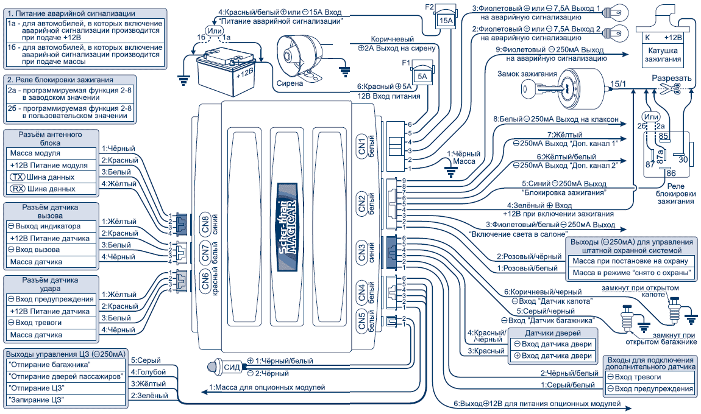
Схема 1
Схемы подключения датчиков дверей и управления салонным
светом (схемы 2-10)
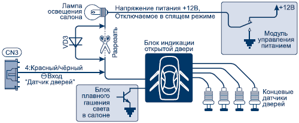
Схема 2
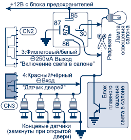
Схема 3
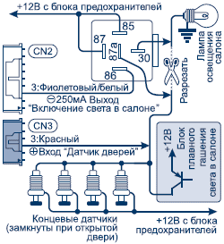
Схема 4
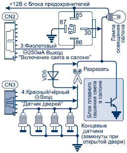
Схема 5

Схема 6
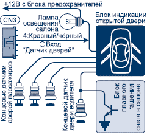
Схема 7
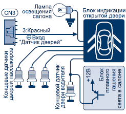
Схема 8
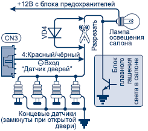
Схема 9
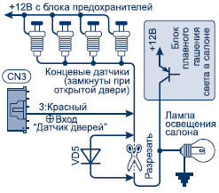
Схема 10
Схемы подключения датчиков капота и багажника (схемы 11-12)
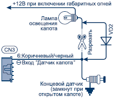
Схема 11
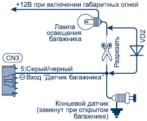
Схема 12
Схемы подключения центрального замка (схема 13-18)
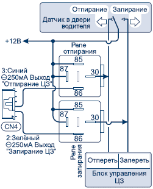
Схема 13
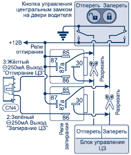
Схема 14
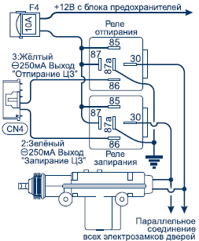
Схема 15
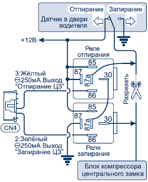
Схема 16
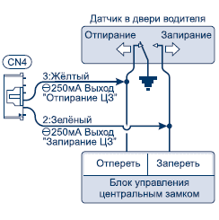
Схема 17
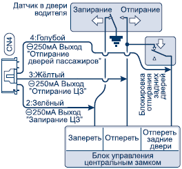
Схема 18
Схема подключения центрального замка с приоритетным отпиранием двери водителя (схема 19)
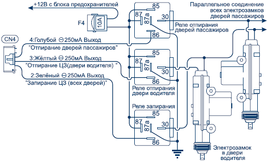
Схема 19
Схемы подключения отпирания багажника (схемы 20-21)
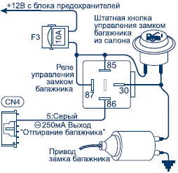
Схема 20
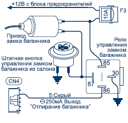
Схема 21